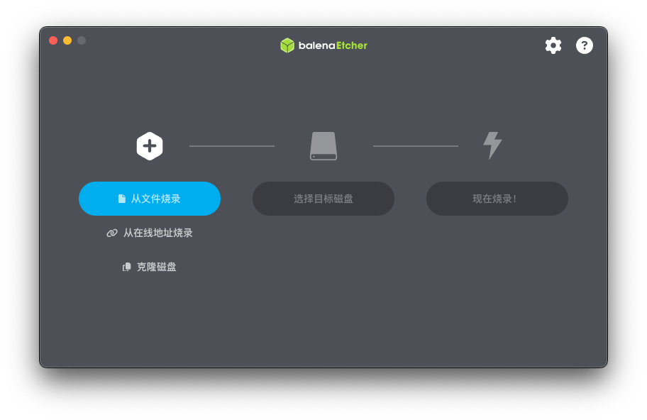
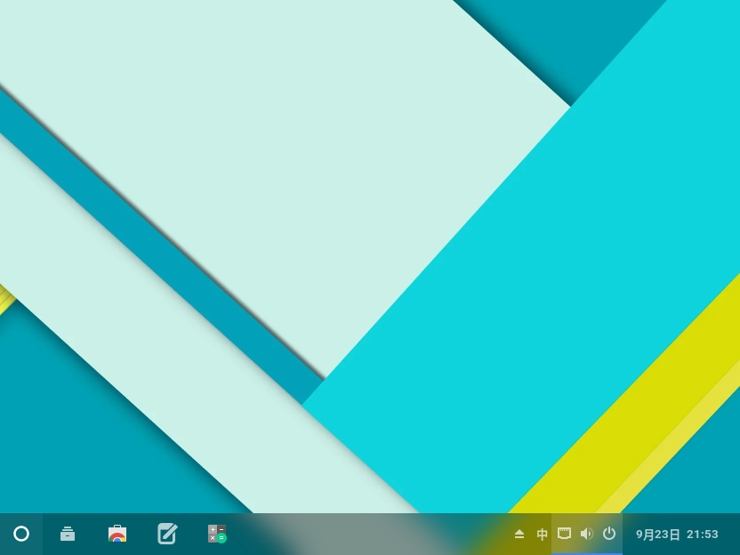

准备开始
本节帮助你确定您的设备是否支持ChronixOS。
设备最低要求
CPU：2010年后任意Intel/AMD
GPU/显卡：Intel/AMD任意
硬盘存储：32GB（固态机械皆可）
运行内存：4GB（DDR3 1333以上）
TPM：无要求
网络适配器：Broadcom除外（特殊方式可启用）
启动方式：UEFI Only
检查全部通过后，准备一个不小于20GB的外部存储设备用于制作启动盘，并提前在官网下载好镜像
跳转到官网ISO占用大约16GB，为电脑预留足够的空间
下载balenaEtcher
# darwin (macOS,required 11+,only Intel)
https://downloads.sourceforge.net/project/etcher.mirror/v2.1.7/balenaEtcher-2.1.7-x64.dmg
# Windows
https://downloads.sourceforge.net/project/etcher.mirror/v2.1.7/balenaEtcher-2.1.7.Setup.exe
# Linux
https://downloads.sourceforge.net/project/etcher.mirror/v2.1.7/balenaEtcher-linux-x64-2.1.7.zip制作启动盘
打开balenaEtcher后，您应该看到类似这样的画面：

开始制作启动盘：
选择“从文件烧录”，在弹出的选择狂选择您刚刚下载的镜像文件
选择“选择目标磁盘”，选择您想要用于作为ChronixArch启动盘的对应设备
选择“现在烧录！”，软件开始制作
烧录完成后，确定关闭balenaEtcher即可
安装过程
完成上一步后，重启并从您的启动盘启动，方式因机型而不同，请上网搜索您的对应型号从其他设备启动的方式。
开箱体验
如果您已经进行到这一步，恭喜，还剩下几个设置，就能开始使用了。
跟随指引，完成语言，地区与时区，用户账户设置
桌面布局&锁屏
恭喜，您完成了安装Chronix Arch的所有操作，接下来可以开始探索系统了。
接下来，您将会看到下方界面：

左下角的圆环为抽屉按钮，上方以名称首字母升序方式排列，下方为搜索框，可以直接查找对应的程序名以及描述。
右下角点击时钟可展开通知面板，点击状态图标打开控制中心，具体使用方法，参考GNOME快速设置。
有时您会看到右侧多出来了一些图标，不用疑惑，用对待Windows小图标的方式来处理使用他们。
鼠标/触控板多指上滑拖动到屏幕左上角打开活动，顶部菜单栏用于搜索。触控板二次上滑打开GNOME应用抽屉
通常情况下，您不可以在桌面上放置任何东西，但通过一些特殊方式可以实现，参考后文。
个性化
您可以更改系统内很多东西，先列举一下您可以更改的所有部分
其中包含了系统的默认配置，其对应的类型，以及更改范围。
参数
| 名称 | 类型 | 说明 |
|---|---|---|
mutter | 壁纸 | 修改壁纸 |
dash-to-panel | 任务栏 | 调整任务栏的细节设置 |
gnome | 桌面环境 | 更换一个桌面环境(Advanced) |
gnome-tweaks | GTK主题 | 调整字体，主题等(Advanced) |
gnome-extensions | GTK扩展 | 给桌面加入扩展(Advanced) |
blur-my-shell | blur模糊 | 修改模糊效果(Advanced) |
arc-menu | 应用抽屉/icon | 修改抽屉样式以及其icon(Advanced) |
plymouth | 开机动画 | 自定义开机动画(Advanced) |
gdm-settings | 登陆屏幕 | 自定义登陆屏幕时的GTK主题与细节(Advanced) |
lockscreen-extension | 锁定屏幕 | 修改锁屏细节(Advanced) |
beqs | 控制中心 | 调整控制中心面板布局以及细节(Advanced) |
我们仅为您介绍非Advanced的个性化设置
修改壁纸：
桌面右键点击更改壁纸进入设置的个性化页面
我们为您提供了五张Material风格的预设壁纸，您可以在网上自行下载壁纸来使用
调整任务栏：
任务栏右键点击“Dash to Panel设置"进入任务栏配置页面
按照Dash To Panel扩展的Github页面学习配置
软件使用
向您介绍各个软件的使用方法。
计算器
GNOME计算器-GNOME Apps设置
GNOME设置-GNOME Apps文本编辑器
GNOME文本编辑器-GNOME Apps图像查看器
GNOME图像查看器-GNOME Apps文档查看器
GNOME文档查看器-GNOME Apps文件
Nautilus-GNOME Apps应用商店
GNOME软件-GNOME AppsAmberol
Amberol-GNOME AppsGoogle Chrome
Google Chrome 网页浏览器Waydroid
Android容器本体，点击即可启动Android进入桌面
Winetricks
Wine配置工具
Windows与Android支持
我们为了拓宽平台以及使用习惯，加入了Windows与Android兼容功能
# 打开指定EXE/命令
wine #对应目录/对应命令
# 配置Wine
winecfg特别的Chronix Quick-EXE-Runner
为了方便用户日常使用顺畅，我们制作了CQER功能来允许用户直接双击exe打开。通过 wine xxx，因此不要更改 wine 的任何内容。
# 进入Android启动器
waydroid-session-start / # 直接点击开始菜单内的Waydroid图标
# 关闭
waydroid-session-stop / # 下滑的控制中心内关闭特别的Chronix Quick-EXE-Runner
为了方便用户日常使用顺畅，我们制作了CQER功能来允许用户直接双击exe打开。通过 wine xxx，因此不要更改 wine 的任何内容。
终端&tty
在使用过程中会遇到需要命令的部分，您需要一个能输入命令的地方
如果您希望一些功能能够做进系统内而不是终端运行，请向我们反馈，我们会根据大部分用户需求来修改。
关于TTY
我们在默认系统使用情况下通过一些方式禁用了tty的入口，为了防止用户在使用过程中误触到不认识的页面。
但是在gdm内（系统开机后未登录）您仍然可以通过 ctrl + alt + 1～12 的方式打开。
关于终端
如果您觉得tty的使用过于困难，您可以选择使用我们内置在系统内的 sakura 终端模拟器
按下 ctrl + alt + t 即可打开
内置套件
Chronix Clear Beta 2026-09-20
- 在终端通过
chronix-clear直接运行 - 这个工具主要为了在您封装系统前提前清理您的个性化信息与个人数据
- 使用后请立即重启并在完成封装前不要再次进入系统，否则设备信息会重新写入